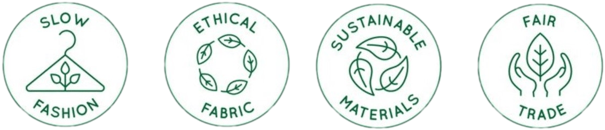

EMILIA ABAD
EMILIA A. es un proyecto mediante el cual pretendo darle voz a la moda conciente y sustentable mediante la reparación y/o fusión de prendas ya existentes para alargar su vida útil, así como la creación de nuevas prendas personalizadas a partir de textiles reutilizados. Este proyecto entraña el profundo deseo de que la sociedad algún día abandone el fast fashion, visibilizando las cadenas de injusticia que se ejercen dentro de las grandes corporaciones, además del terrible impacto ambiental que esta industria genera.
Comencé mi relación con los hilos, las agujas y la ropa de segunda mano desde pequeña. Mi abuela materna es costurera por saber popular, ella me heredó los saberes de la compra de segunda y la reparación de prendas. Mamá por su parte trabajaba de modista desde su taller en casa, eso me permitió experimentar de cerca con máquinas profesionales, aprender sobre moldería y conocer todo lo que implica la operación de un taller de costura. Recuerdo a mamá regalarme restos de tela que usaba en su taller para que yo pudiera hacer mis propias creaciones.
Finalmente, cuando llegué a la edad de decidir qué hacer con mi vida profesionalmente, decidí que quería estudiar diseño de indumentaria y textiles y me especialicé en lencería. También tomé algunos cursos de marketing de modas. Fue durante esta etapa que comencé a descubrir el lado oscuro de la industria textil y la moda, esto despertó en mí una profunda inquietud de querer ejercer un proceso justo en la creación de prendas, de establecer un modelo de negocio más generoso y consciente para la partes involucradas en tal proceso y sobre todo, convertirme en portavoz de la moda sostenible/sustentable.